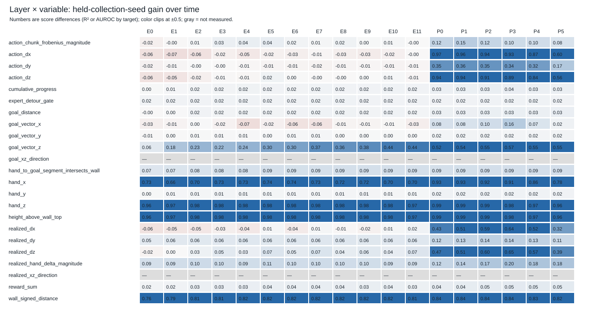
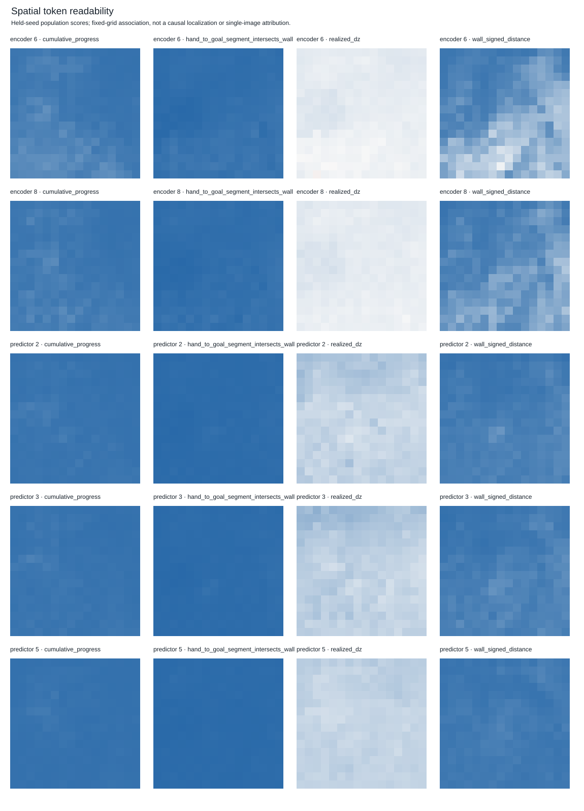

Not a completed causal map or validated steering operator. Raw data: JSON · CSV.

Evidence: geometry_map.json rows[].linear_score

Evidence: geometry_map.json rows[].spatial_decodability

Evidence: geometry_map.json realized_xz_direction rows